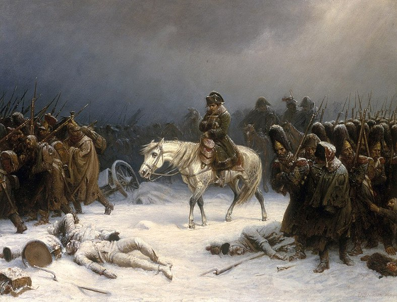

Campañas Napoleónicas
y Waterloo
El ascenso, dominio y caída final del Imperio Francés · Siglo XIX
La era de las Guerras Napoleónicas transformó radicalmente el orden geopolítico de Europa. Napoleón Bonaparte, combinando los principios fundamentales de la Revolución Francesa con una brillante audacia estratégica, desafió a las coaliciones absolutistas del continente mediante campañas militares masivas que marcaron una época.
Grandes Batallas del Imperio
Antes de su trágico final en las llanuras del norte, el Gran Ejército galo consolidó victorias legendarias. La Batalla de Austerlitz (1805), bautizada como la 'Batalla de los Tres Emperadores', se alza como su máxima obra maestra táctica, donde destruyó a las fuerzas austro-rusas utilizando el engaño elemental.
No obstante, la hegemonía marítima británica en Trafalgar (1805) le cerró el paso al canal de la Mancha, forzándolo a decretar un bloqueo económico continental para asfixiar a sus rivales insulares.
La Campaña de Rusia · 1812
El punto de quiebre definitivo se originó con la invasión al Imperio Ruso. La rigurosa estrategia rusa de "tierra quemada", sumada al implacable invierno continental, masacró y desmoralizó a un ejército de más de 600,000 soldados, forzando una retirada trágica que marcó el principio del fin.

La Batalla de Waterloo · 18 de junio de 1815
Tras un breve destierro, Napoleón regresó triunfal durante el período histórico conocido como los "Cien Días". En respuesta, las potencias europeas reaccionaron con presteza estructurando la Séptima Coalición armada con un único propósito: removerlo definitivamente del tablero mundial.
El choque decisivo tuvo lugar en Waterloo, Bélgica. El ejército francés atacó ferozmente las líneas aliadas defendidas con terquedad por el Duque de Wellington. Sin embargo, la oportuna y fulminante llegada de las divisiones prusianas comandadas por el mariscal Blücher desbarató las defensas imperiales, desatando una retirada irreversible.

Consecuencias Históricas
La fulminante derrota en Waterloo clausuró para siempre la influencia de Bonaparte, quien terminó sus días desterrado en el rincón más aislado del Atlántico Sur: la isla de Santa Elena.
Posteriormente, las dinastías triunfadoras celebraron el célebre Congreso de Viena, cuyo norte principal fue restaurar el absolutismo tradicional, rediseñar las fronteras continentales y tejer pactos mutuos para sofocar cualquier chispa revolucionaria inspirada en el legado galo.
Conclusión
El ciclo napoleónico representó un torbellino geopolítico que, a pesar de concluir en las ruinas de Waterloo, desmanteló irremediablemente las bases feudales de Europa Occidental e inyectó las primeras semillas de los códigos civiles modernos y el sentimiento nacionalista contemporáneo.